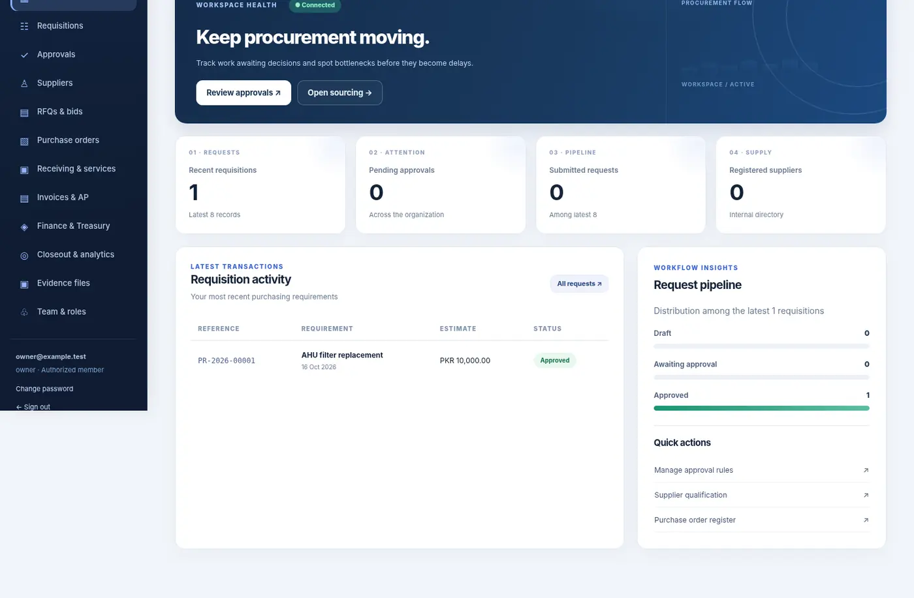
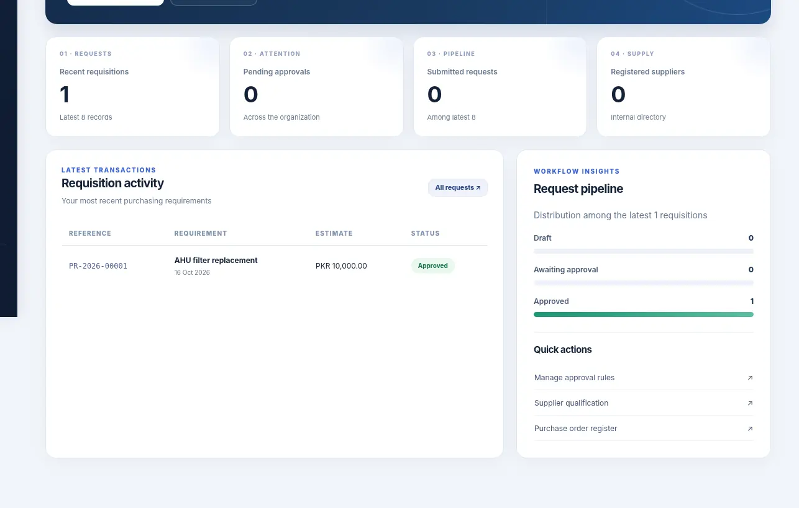

See what's holding it up
Requisitions and approval queues help responsible people understand the next action.
A needed item shouldn't disappear between a request, an approval and a supplier. ProcureFlow organizes purchasing steps so teams can see what's waiting and who needs to act.
 SANITIZED UI PREVIEW
SANITIZED UI PREVIEWA request is made in one place, approvals happen in another, supplier quotations arrive elsewhere, and purchase orders must be reconciled afterward. Delays become invisible until a project needs the material.
ProcureFlow offers a structured path from need identification to procurement completion, with the next responsible action easier to spot.
It's not just about issuing a purchase order. It's about the relief of knowing that requests and decisions have an understandable path.
Requisitions and approval queues help responsible people understand the next action.
Supplier decisions, RFQs and purchase records have a connected place instead of isolated inboxes.
When purchasing status is visible, management can focus on real exceptions rather than routine chasing.
Explore existing sample-data interface views below. ProcureFlow is offered for on-demand customization; availability of specific integrations and real-time behavior must be verified for each rollout.
See real interface captures ↗The procurement lifecycle is a single business problem, not a reason to sell separate supplier and inventory applications.
Bring sourcing information, RFQs and supplier decision context closer to purchasing activity.
Give requests and approval stages a consistent record and responsible owner.
Connect purchase demand, order issuance and receiving context; full warehouse inventory management remains a distinct scope.
Organize orders, supplier invoice context and purchasing status for better downstream control.
ProcureFlow's proposed and tested workflows cover procurement rather than a complete warehouse management system. Supplier compliance automation, stock costing and finance posting must be scoped and accepted separately.
See genuine future product ideas ↗Modules are described from the user's perspective. Exact controls, automations, configurations and integrations are defined during a private implementation discussion.
Standardize purchase needs, supporting notes, quantity requests and project attribution.
Organize appropriate review and delegated decision-making across departments.
Maintain supplier context, qualifications and purchasing relationships in one place.
Prepare and manage request-for-quotation packages without losing the originating requirement.
Support review of commercial options alongside relevant purchasing criteria.
Connect purchase order issuance to the relevant request and selection.
Track what was received, delivered or still requires follow-through.
Link supplier paperwork with procurement records before financial processing.
Reduce time spent checking who is holding the next step.
See open commitments, cycle bottlenecks and status trends.
Selected authentic interface screenshots reveal the design language and user experience. Sensitive records and proprietary implementation details remain outside the public showcase.
A single operational lens over requests and purchasing activity.
SELECTED PRODUCT CAPTUREUnderstand which purchasing needs require movement.

SELECTED PRODUCT CAPTUREMake follow-through visible across the purchasing journey.

SELECTED PRODUCT CAPTUREConfigured by discussion to fit the organization's purchasing controls and approval structure.
Adapt routing around the organization's delegation and spend controls.
Make request progress legible to the people responsible for the outcome.
Help purchasing work survive individual absences and inbox overload.
Discuss connections to commercial and finance processes during scoping.
Our approach begins with how your team actually works. We identify the repetitive administrative steps, define the controls that matter, and discuss an implementation that fits—not a longer software checklist.
ProcureFlow is presented for on-demand customization. The three public visuals are excerpts from one sample-data preview dashboard, not three separately validated or live module screens. Private demonstrations can cover requirements and integration fit.
Tell us where purchase requests stall. We'll explore how an accountable workflow could make the next action easier to see.